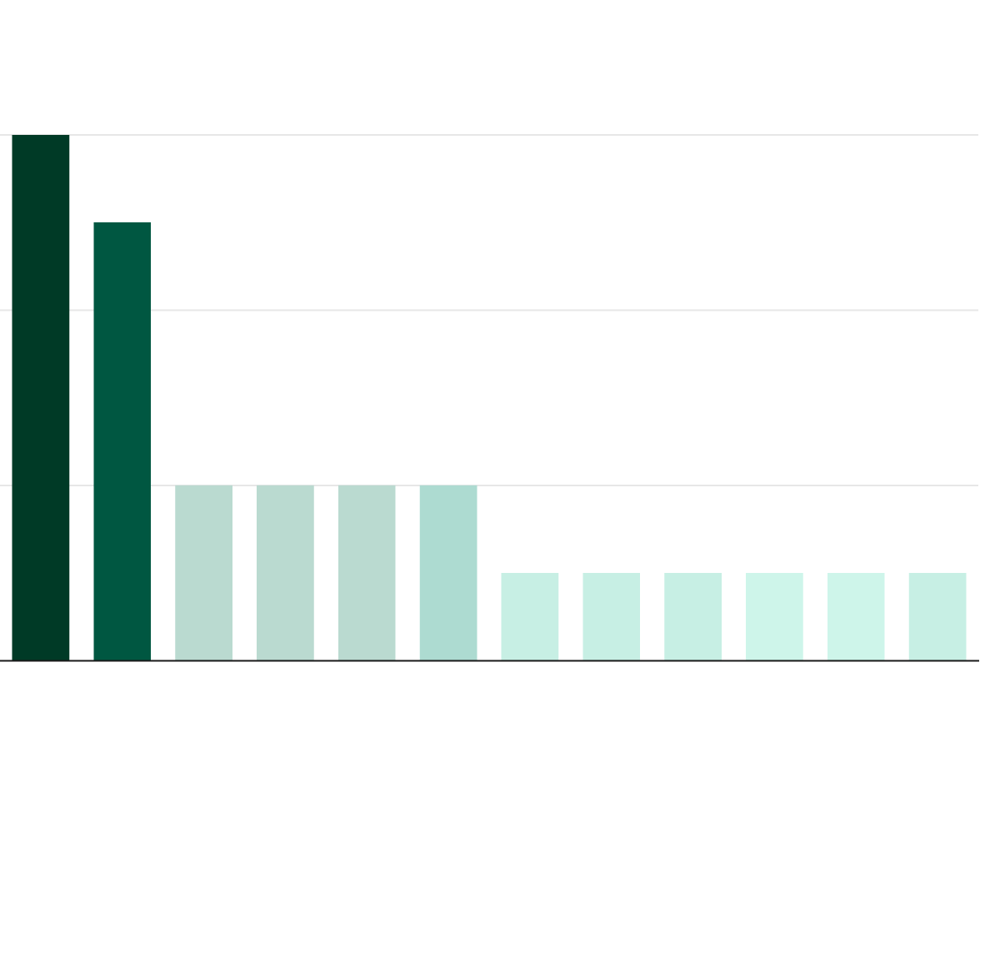

Wen Jiabao served as the premier for the Republic of China from 2003 to 2013. He visited as far as 90 nations during his leadership. Famously called as “Grandpa Wen” by China’s state media, he emerged as a pivotal diplomatic strategist, skillfully navigating complex international relations through targeted engagements that highlighted China's growing global influence. His unprecedented visit to North Korea broke a nearly two-decade diplomatic silence, symbolizing China's continued strategic influence in the region.
Hu Jintao, who served as the general secretary of the Chinese Communist Party from 2002-2012, made as far as 87 visits outside China. This is almost at par with Jiabao counts to various countries.
As per reported by BBC in 2013, during the Jiabao-Jintao partnership, China experienced unprecedented economic growth, becoming an economic superpower with an economy four times larger than in 2002. The period was characterized by remarkable national development, including substantial infrastructure expansion, housing growth, increased car ownership, and the emergence of a robust middle class.
The leadership successfully navigated complex challenges, including the 2008 global economic crisis, while maintaining political stability. They managed a potentially divisive leadership transition by addressing internal political tensions, most notably through the removal of Bo Xilai. Hu Jintao's leadership was particularly noteworthy for maintaining party unity and preserving the Communist Party's dominant societal role.

Purpose for Wen's Jiabo's visit during is premiership
Jiabo made maximum visit for Shanghai Cooperation Organisation
Asia Cooperation Dialogue
Yu Wang and Randall W. Stone’s China Visits dataset
Visually and economically, China underwent a dramatic transformation. Cities became hubs of intense economic activity, with consumption patterns rivaling those of developed nations. The period saw China rise across nearly every major economic and developmental indicator, establishing itself as a global economic powerhouse despite ongoing political complexities.
Ultimately, the passage frames the Hu-Wen era as a critical phase of national development, where China transitioned from an emerging economy to a significant global economic force, fundamentally reshaping its national identity and international standing.